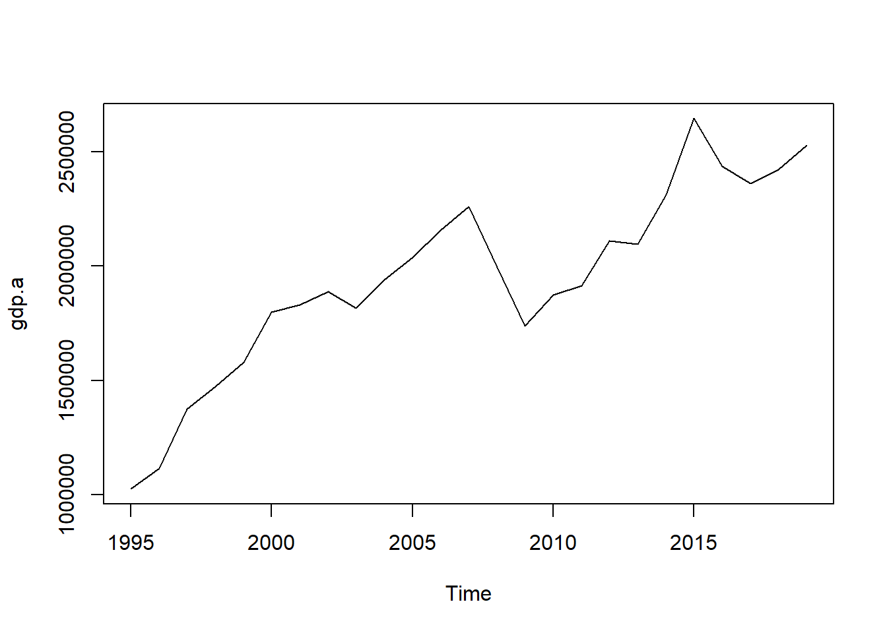
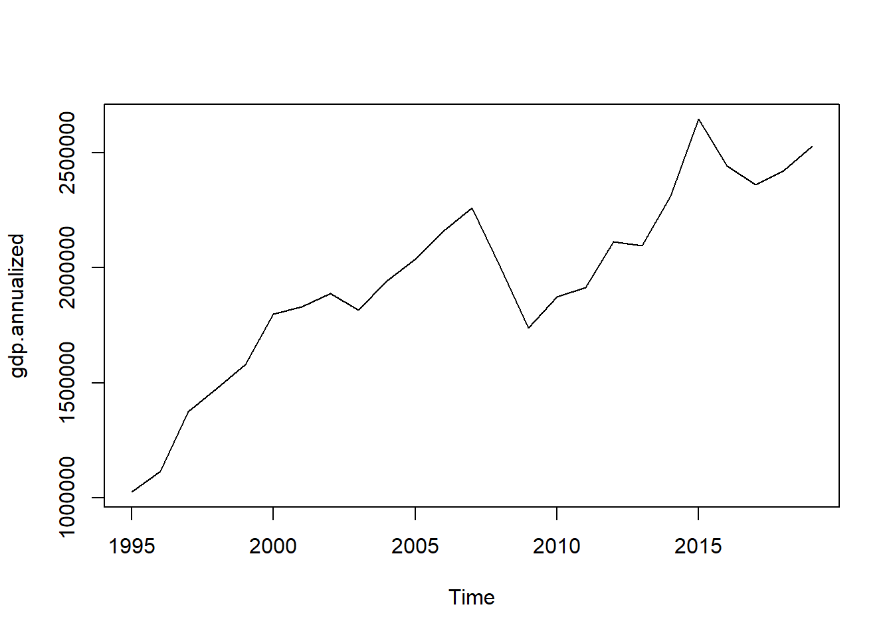
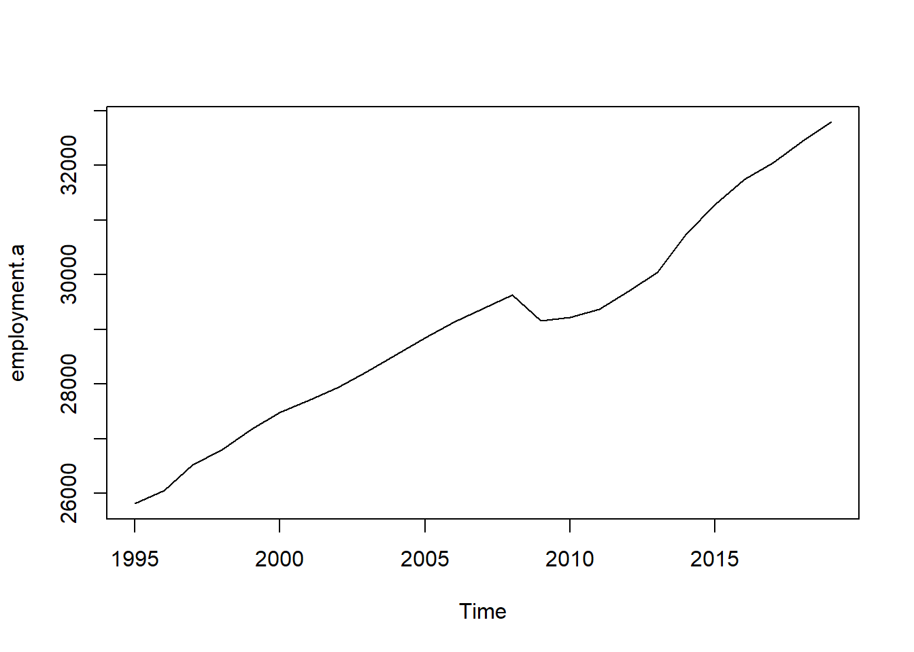
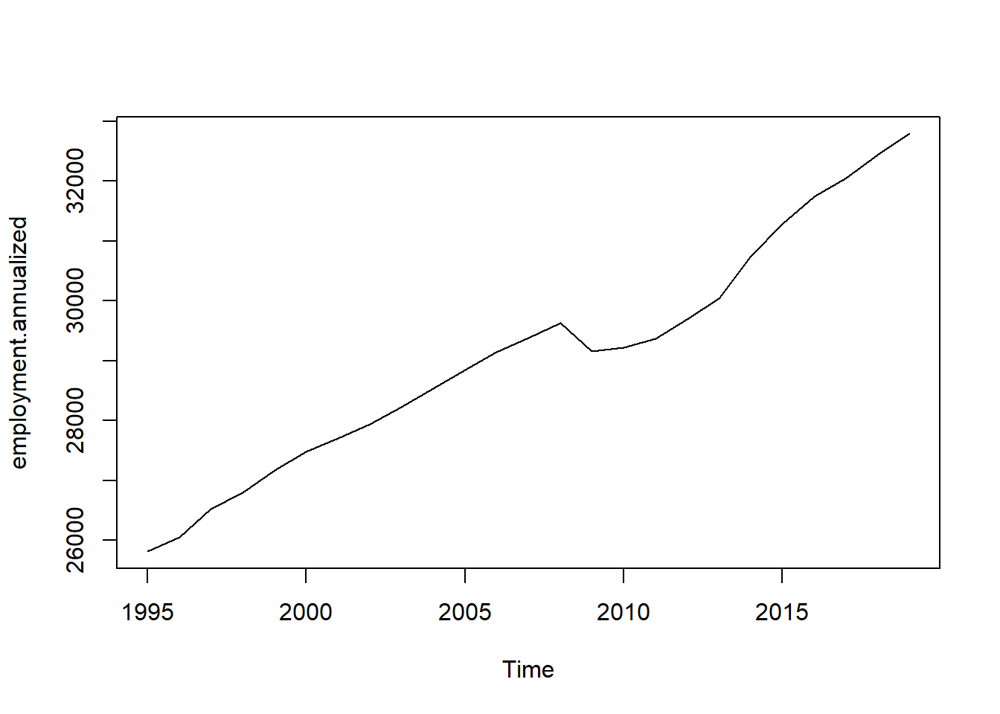
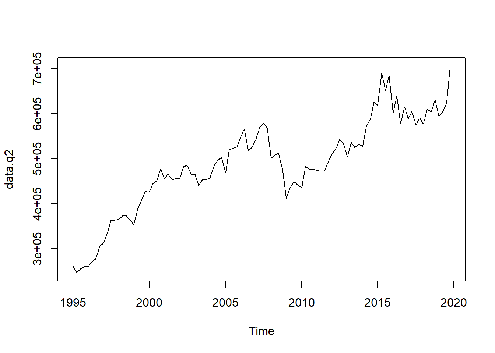
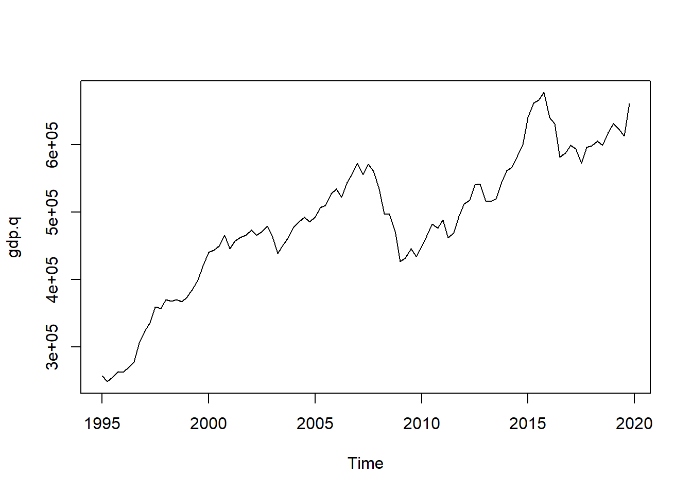
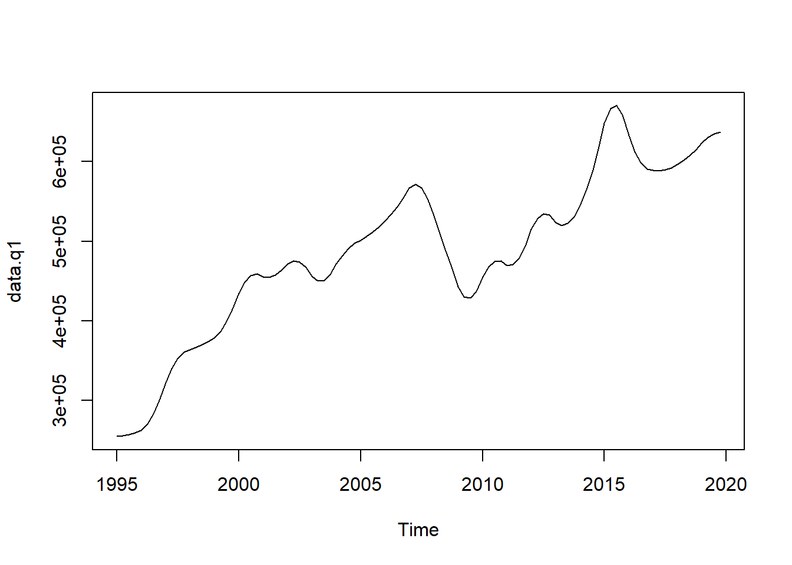
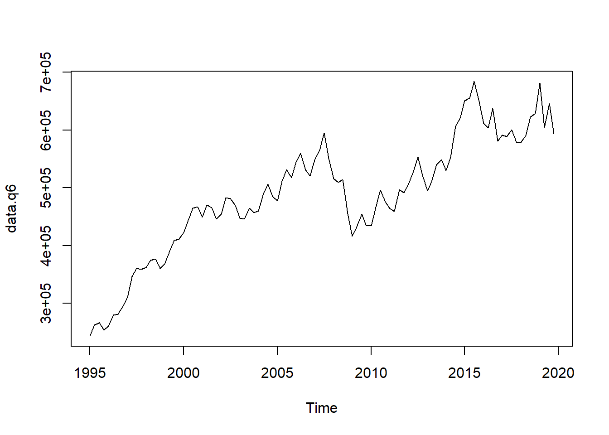

Topic 4 Temporal aggregation and disaggregation
Very often, time series data that is required in empirical analyses consists of variables at different frequencies. Unless one is willing to use specific mixed-frequencies models, it is usually necessary to convert some of the series so that all the data has the same frequency. In what follows, we will present the techniques for both reducing and increasing the frequency of a time series: these techniques are, respectively, temporal aggregation and temporal disaggregation. We will complete the theoretical exposition with some examples using macroeconomic data from the Eurostat’s national account database. In particular, we will show the usage of the tempdisagg library, which offers some useful functions for both temporal aggregation and disaggregation.
#install.packages("tempdisagg")
#install.packages("eurostat")
#install.packages("knitr")
library(tempdisagg) ## Warning: il pacchetto 'tempdisagg' è stato creato con R versione 4.1.3library(eurostat) ## Warning: il pacchetto 'eurostat' è stato creato con R versione 4.1.3library(knitr)gdp.q <- read.csv("gdp.q.csv")
gdp.q <- ts(gdp.q$values, start = c(1995,1), end = c(2019, 4), frequency = 4)
gdp.a <- read.csv("gdp.a.csv")
gdp.a <- ts(gdp.a$values, start = c(1995,1), end = c(2019, 1), frequency = 1)
exports.q <- read.csv("exports.q.csv")
exports.q <- ts(exports.q$values, start = c(1995,1), end = c(2019, 4), frequency = 4)
imports.q <- read.csv("imports.q.csv")
imports.q <- ts(imports.q$values, start = c(1995,1), end = c(2019, 4), frequency = 4)
employment.a <- read.csv("employment.a.csv")
employment.a <- ts(employment.a$values, start = c(1995,1), end = c(2019, 1), frequency = 1)
employment.q <- read.csv("employment.q.csv")
employment.q <- ts(employment.q$values, start = c(1995,1), end = c(2019, 4), frequency = 4)4.1 Aggregation
Time aggregation consists of manipulating a series in order to make it available at a lower frequency. For instance, we could need to retrieve annualized GDP given the quarterly data, or the weekly price change of a stock for which data at a daily frequency is available.
Of course, aggregating a time series reduces the number of observations, which results in the loss of some information. A large literature has studied the effects of aggregation on forecast performances and on the statistical properties of time series models, showing that the impact can be large. Intuitively, since the information is condensed in a lower number of observations, aggregation reduces the variability of the data, at the cost of part of this information being lost. In practice, we usually take the average value of different observations, which tends to smooth the time series: even if smoothing can be desirable in some contexts (e.g. for seasonal adjustment), it deletes the variation at the high-frequency level, and it can therefore preclude the model from detecting regularities at this level. As a consequence, the resulting model will produce predictions that are more stable and less volatile than those that would be obtained using disaggregated data: this is not good news, since it means that we are missing part of the story that the data contains.
Temporal aggregation of a time series is a quite straightforward operation, which requires to keep in mind only a few caveats regarding the nature of the variable being temporally aggregated. Indeed, there are four main techniques of temporal aggregation which should be used depending on whether we are considering stock or flow variables. All aggregation methods ensure that either the sum, the average, the first or the last value of the resulting low-frequency series is consistent with the high-frequency series.
Flow variables. Consider, for instance, the case of quarterly GDP. If we want to retrieve annual GDP, what we have to do is summing each year’s quarterly values to get the total amount produced in a given country each year. This is how we usually deal with flow variables: the total low-frequency flow is the sum of all its high-frequency flows. In our example, 2020 GDP of a given country will be the sum of 2020:Q1, …, 2020:Q4 GDP:
\[ \text{GDP}_{2020} = \text{GDP}_{2020:Q1} + \text{GDP}_{2020:Q2} + \text{GDP}_{2020:Q3} + \text{GDP}_{2020:Q4} \]
Stock variables. Consider the example of the total stock of capital in a country. Of course, summing all the values of the total capital of each quarter would make no sense, as we would end up counting four times the same capital stock. Temporal aggregation, in this case, can be performed in three ways, depending on the nature of the variable considered and on the aim of the empirical researcher:
Taking the average of the high-frequency observations. For instance, if we want to consider the annual stock of capital as the average level of its quarterly values, the annual capital in 2020 will be:
\[ \text{Capital}_{2020} = \frac{\text{Capital}_{2020:Q1} + \text{Capital}_{2020:Q2} + \text{Capital}_{2020:Q3} + \text{Capital}_{2020:Q4}}{4} \]
Taking only the last observation of the high-frequency variable. For instance, we could consider as the most reliable measure of the total capital stock the last data collected by Eurostat:
\[ \text{Capital}_{2020} = \text{Capital}_{2020:Q4} \]
Taking only the first observation of the high-frequency variable. On the contrary, for our study, we could be interested in considering as the annual capital stock its value at the beginning of the year:
\[ \text{Capital}_{2020} = \text{Capital}_{2020:Q1} \]
We report below an example using Eurostat data for the GDP of the United Kingdom.
## True annual GDP
plot(gdp.a)
## Annualized GDP
gdp.annualized <- ta(gdp.q, conversion = "sum", to = "annual")
plot(gdp.annualized)
## True annual total employment (in thousands)
plot(employment.a)
## Annualized total employment
employment.annualized <- ta(employment.q, conversion = "average", to = "annual")
plot(employment.annualized)
4.2 Disaggregation
Temporal disaggregation refers to the process of transforming a low-frequency time series (for example annual) into a higher frequency series (for example quarterly or monthly).
Temporal disaggregation can be performed with or without one or more high-frequency indicator series, useful to inform the process. The most common procedures to perform disaggregation are Denton and Denton-Cholette, which are concerned with movement preservation and generate a series similar to the indicator but can also be performed without it, and Chow-Lin, Litterman and Fernandez, which are regression-based methods that always use one or more indicator series. The Chow-Lin procedure is best for stationary or cointegrated series, while Litterman and Fernandez non-cointegrated series.
All of these procedures can be presented in a general framework. Suppose that you observe a low frequency series, denoted by \(y_l\), and that you want to retrieve the higher frequency variable \(y\), which is unobserved. The first step to do so is to tale an indicator series, denoted by \(x\), which is available at quarterly frequency. Of course a good indicator series is one that moves together with the unobserved series \(y\). The next step is to perform the aggregation of the indicator series so that it matches the freqency of \(y_l\). This is performed by means of the conversion matrix \(C\):
\[ x_l = Cx, \] All disaggregation methods ensure that either the sum, the average, the first or the last value of the resulting high frequency series is consistent with the low frequency series, and this aspect is controlled by the matrix \(C\). For example, if \(x\) is at a quarterly frequency and we want to perform annualization so that the sum is consistent with \(y_l\), we will use a matrix of the form:
\[ C = I_{n_l} \otimes [1,1,1,1] = \underset{n_l \times n}{ \begin{bmatrix} 1 & 1 & 1 & 1 & 0 & 0 & 0 & 0 & \cdots & 0 & 0 & 0 & 0 \\ 0 & 0 & 0 & 0 & 1 & 1 & 1 & 1 & \cdots & 0 & 0 & 0 & 0 \\ & \vdots &&& &&&& &&& \vdots & \\ 0 & 0 & 0 & 0 & 0 & 0 & 0 & 0 & \cdots & 1 & 1 & 1 & 1 \end{bmatrix}} \] If instead we require average-consistency, \(C\) will be of the form:
\[ C = I_{n_l} \otimes [0.25,0.25,0.25,0.25] = \underset{n_l \times n}{ \begin{bmatrix} 0.25 & 0.25 & 0.25 & 0.25 & \cdots & 0 & 0 & 0 & 0 \\ & \vdots &&& \ddots &&& \vdots & \\ 0 & 0 & 0 & 0 & \cdots & 0.25 & 0.25 & 0.25 & 0.25 \end{bmatrix}} \] You then subtract \(x_l\) (pointwise) from \(y_l\), obtaining the vector of residuals \(u_l\). Finally, is estimated according to:
\[ \hat{y} = x + Dx_l , \] where \(D\) is a distribution matrix. The different disaggregation methods differ for the assumptions they rely on and on how the \(D\) matrix are constructed. They can also differ in the number of indicator series employed.
4.2.1 Denton and Denton-Cholette
Indicator series - one or no indicator series. \(x\) is simply a vector, using a vector of ones (a constant), is equivalent to having no indicator series.
Distribution matrix - minimizes the squared absolute (or relative) deviations from a (differenced) indicator series, where the parameter h defines the degree of differencing. For the additive Denton methods and for \(h = 0\), the sum of the squared absolute deviations between the indicator and the final series is minimized. For \(h = 1\), the deviations of first differences are minimized, for \(h = 2\), the deviations of the differences of the first differences, and so on. For the proportional Denton methods, deviations are measured in relative terms.
The Denton-Cholette method is generally preferable and differs from the simple Cholette in that it removes the spurious transient movement at the beginning of the resulting series. In this case the distribution matrix is indicated with \(D_{DC}\).
4.2.2 Chow-Lin, Fernandez, Litterman
These are regression based methods that perform GLS of \(y_l\) on the annualized indicator series \(x_l = Cx\) . Note that in this case \(x\) can be a matrix since more than one indicator series can be employed. The critical assumption of these methods is that the linear relationship between the annualized indicator series and \(y_l\) also holds between the quarterly indicator series and \(y\).
Indicator series - one or more indicator series. In this case the vector \(u_l\) is obtained by subtracting a transformed version of the indicator series:
\[ u_l = y_l - C\widetilde{x} \] where \(\widetilde{x}=\hat{\beta}x\) . \(\hat{\beta}\) is the regression coefficient obtained by regressing \(y_l\) on the aggregated version of the indicator series, \(x_l = Cx\). For a given variance-covariance matrix, \(\Sigma\), the GLS estimator, \(\hat{\beta}\) , is calculated in the standard way:
\[ \hat{\beta}(\Sigma) = [x'C'(C\Sigma C')^{-1}Cx]^{-1}x'C'((C\Sigma C')^{-1})y_l \] * Distribution matrix - these methods use \(D = \Sigma'C'(C\Sigma C')^{-1}\) as distribution matrix.
The 3 methods differ in how the \(\Sigma\) matrix is calculated. Chow-Lin assumes that the quarterly residuals follow an autoregressive process of order 1 (AR1) where the innovations are \(WN(0, \sigma_e)\) and the autoregressive parameter \(\rho < 1\). The resulting covariance matrix has the following form:
\[ \Sigma_{CL}(\rho) = \frac{\sigma^2_{\epsilon}}{1-\rho^2} \begin{bmatrix} 1 & \rho & \cdots \rho^{n-1} \\ \rho & 1 & \cdots & \rho^{n-2} \\ \vdots & \vdots & & \vdots \\ \rho^{n-1} & \rho^{n-2} & \cdots & 1 \end{bmatrix} \] Fernandez and Litterman deal with cases when the quarterly indicators and the annual series are not cointegrated. They assume that the quarterly residuals follow a nonstationary process (Fernandez is a special case of Litterman, where \(\rho = 0\)). The resulting covariance matrix has the following form:
\[ \Sigma_{L}(\rho) = \sigma^2_{\epsilon} \left(\Delta'H(\rho)'H(\rho) \Delta\right)^{-1} \] where
\[ \Delta = \begin{bmatrix} 1 & 0 & 0 & \cdots & 0 \\ -1 & 1 & 0 & \cdots & 0 \\ 0 & -1 & 1 &\cdots & 0 \\ & \vdots & & & \vdots \\ 0 & 0 & 0 & \cdots & 1 \\ \end{bmatrix} \] and
\[ H(\rho) = \begin{bmatrix} 1 & 0 & 0 & \cdots & 0 \\ -\rho & 1 & 0 & \cdots & 0 \\ 0 & -\rho & 1 &\cdots & 0 \\ & \vdots & & & \vdots \\ 0 & 0 & 0 & \cdots & 1 \\ \end{bmatrix} \] The autoregressive parameter \(\rho\) in the Chow-Lin and Litterman methods can be estimated in several different ways. An introductory exposition can be found in the references.
4.3 An example using Eurostat data
In the following example we use Eurostat data for UK, we take annual GDP as \(y_l\) and we use quarterly exports and imports as indicator series to disaggregate GDP and obtain \(\hat{y}\). Of course we dispose also of the true \(y\), quarterly GDP, which we use to evaluate our results. We first retrieve the data with the eurostat package:
## Obtain the GDP data from Eurostat
query <- search_eurostat(pattern = "GDP", type = "dataset", fixed = F)
id.a <- query$code[1]
id.q <- query$code[2]
## True quarterly data
gdp.q_raw <- get_eurostat(id.q,
#type = "label",
#select_time = "Y",
time_format = "date", # alternative, "num"
filters = list(geo = "UK", ## Germany (until 1990 former territory of the FRG)
na_item = "B1GQ", ## Gross domestic product at market prices
unit = "CP_MEUR", ## Euro series (CP MEUR ) are derived from
#transmitted national currency series using historic exchange rates.
#They are suitable for internal comparison and aggregation.
#When comparing them over time, account must be taken of exchange rate effects.
s_adj = "NSA")) ## Not seasonal nor calendar adjustment
label_eurostat_vars(gdp.q_raw) ## Variables
gdp.q <- gdp.q_raw[, c("time", "values")]
kable(head(gdp.q))
plot(gdp.q, type = "l")
## Annual data
gdp.a_raw <- get_eurostat(id.a,
time_format = "date",
filters = list(geo = "UK",
na_item = "B1GQ",
unit = "CP_MEUR",
s_adj = "NSA"))
gdp.a <- gdp.a_raw[, c("time", "values")]
kable(head(gdp.a))
plot(gdp.a, type = "l")
## Indicator series: industrial production
query <- search_eurostat(pattern = "industr", type = "dataset", fixed = T)
query$title
exports.q_raw <- get_eurostat("namq_10_exi",
filters = list(geo = "UK",
na_item = "P6", ## Exports = P6, Imports = P7
unit = "CP_MEUR",
s_adj = "NSA"))
exports.q <- exports.q_raw[,c("time", "values")]
plot(exports.q$values, type = "l")
## Consider the data from 1995:Q1
gdp.q_1995 <- subset(gdp.q, time >= as.Date("1995-01-01") & time < as.Date("2020-01-01"))
gdp.a_1995 <- subset(gdp.a, time >= as.Date("1995-01-01") & time < as.Date("2020-01-01"))
exports.q_1995 <- subset(exports.q, time >= as.Date("1995-01-01") & time < as.Date("2020-01-01"))
par(mfrow = c(2,1))
plot(gdp.q_1995, type = "l")
plt(exports.q_1995, type = "l")We plot the annual and quarterly GDP series:
plot(gdp.a)
plot(gdp.q)
To perform the disaggregation we use the tempdisaggpackage. It’s main function is td(), of which the argument conversion allows to specify wether the resulting disaggregated series should be consistent with either the sum, the average, the first or the last value of low frequency series, to specifies the frequency to which convert the series and method specifies the disaggregation procedure to be employed.
- Denton-Cholette with no indicator series
m1 <- td(gdp.a ~ 1, to = "quarterly", method = "denton-cholette")
data.q1 <- predict(m1)
plot(data.q1)- Denton-Cholette with exports as indicator series
m2 <- td(gdp.a ~ 0 + exports.q, method = "denton-cholette")
data.q2 <- predict(m2)
plot(data.q2)
- Chow-lin with exports as indicator series
m3 <- td(gdp.a ~ exports.q)
summary(m3)##
## Call:
## td(formula = gdp.a ~ exports.q)
##
## Residuals:
## Min 1Q Median 3Q Max
## -177379 -103357 38746 98012 210569
##
## Coefficients:
## Estimate Std. Error t value Pr(>|t|)
## (Intercept) 1.066e+05 3.817e+04 2.793 0.0103 *
## exports.q 2.832e+00 2.702e-01 10.478 3.14e-10 ***
## ---
## Signif. codes: 0 '***' 0.001 '**' 0.01 '*' 0.05 '.' 0.1 ' ' 1
##
## 'chow-lin-maxlog' disaggregation with 'sum' conversion
## 25 low-freq. obs. converted to 100 high-freq. obs.
## Adjusted R-squared: 0.8193 AR1-Parameter: 0.8916data.q3 <- predict(m3)
plot(data.q3)
- Chow-Lin with exports and imports as indicator series:
m4 <- td(gdp.a ~ exports.q + imports.q)
summary(m4)##
## Call:
## td(formula = gdp.a ~ exports.q + imports.q)
##
## Residuals:
## Min 1Q Median 3Q Max
## -109890 -44755 -19502 32780 189382
##
## Coefficients:
## Estimate Std. Error t value Pr(>|t|)
## (Intercept) 119229.917 17137.396 6.957 5.53e-07 ***
## exports.q -4.267 1.286 -3.319 0.00312 **
## imports.q 6.652 1.210 5.496 1.60e-05 ***
## ---
## Signif. codes: 0 '***' 0.001 '**' 0.01 '*' 0.05 '.' 0.1 ' ' 1
##
## 'chow-lin-maxlog' disaggregation with 'sum' conversion
## 25 low-freq. obs. converted to 100 high-freq. obs.
## Adjusted R-squared: 0.956 AR1-Parameter: 0.6064data.q5 <- predict(m4)
plot(data.q5)
- Fernandez with exports and imports as indicator series:
m5 <- td(gdp.a ~ exports.q + imports.q, method = "fernandez")
summary(m5)##
## Call:
## td(formula = gdp.a ~ exports.q + imports.q, method = "fernandez")
##
## Residuals:
## Min 1Q Median 3Q Max
## -87829 -36629 63931 128978 201063
##
## Coefficients:
## Estimate Std. Error t value Pr(>|t|)
## (Intercept) 81223.664 32659.025 2.487 0.0210 *
## exports.q -1.011 2.090 -0.484 0.6333
## imports.q 3.747 1.952 1.920 0.0679 .
## ---
## Signif. codes: 0 '***' 0.001 '**' 0.01 '*' 0.05 '.' 0.1 ' ' 1
##
## 'fernandez' disaggregation with 'sum' conversion
## 25 low-freq. obs. converted to 100 high-freq. obs.
## Adjusted R-squared: 0.6897 AR1-Parameter: 0data.q5 <- predict(m5)
plot(data.q5)
- Litterman with exports and imports as indicator series:
m6 <- td(gdp.a ~ exports.q + imports.q, method = "litterman-maxlog")
summary(m6)##
## Call:
## td(formula = gdp.a ~ exports.q + imports.q, method = "litterman-maxlog")
##
## Residuals:
## Min 1Q Median 3Q Max
## -87829 -36629 63931 128978 201063
##
## Coefficients:
## Estimate Std. Error t value Pr(>|t|)
## (Intercept) 81223.664 32659.025 2.487 0.0210 *
## exports.q -1.011 2.090 -0.484 0.6333
## imports.q 3.747 1.952 1.920 0.0679 .
## ---
## Signif. codes: 0 '***' 0.001 '**' 0.01 '*' 0.05 '.' 0.1 ' ' 1
##
## 'litterman-maxlog' disaggregation with 'sum' conversion
## 25 low-freq. obs. converted to 100 high-freq. obs.
## Adjusted R-squared: 0.6897 AR1-Parameter: 0 (truncated)data.q6 <- predict(m6)
plot(data.q6)
Finally we evaluate the results by comparing them with the true series, by applying a simple squared deviation measure:
a <- sum((gdp.q - data.q6)^2)
b <- sum((gdp.q - data.q6)^2)
c <- sum((gdp.q - data.q6)^2)
d <- sum((gdp.q - data.q6)^2)
e <- sum((gdp.q - data.q6)^2)
f <- sum((gdp.q - data.q6)^2)4.4 References
- ESS guidelines on temporal disaggregation, benchmarking and reconciliation, 2018 edition, Eurostat. https://ec.europa.eu/eurostat/documents/3859598/9441376/KS-06-18-355-EN.pdf/fce32fc9-966f-4c13-9d20-8ce6ccf079b6
- Sax, Christoph, et al. Package ‘tempdisagg’, 2020. http://cran.pau.edu.tr/web/packages/tempdisagg/tempdisagg.pdf